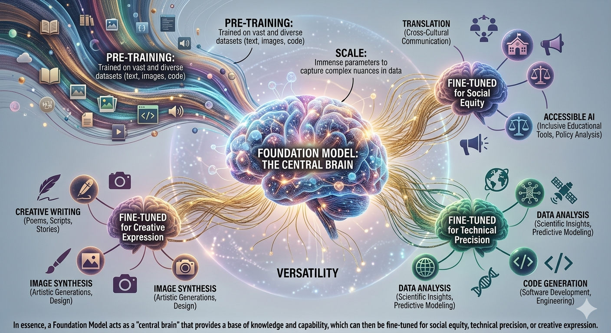

What are Foundation Models?
Generative AI is built upon massive deep learning structures known as Foundation Models. These represent a paradigm shift in how AI systems are developed and deployed.
Key Characteristics:
- Scale: These models feature an immense number of parameters, allowing them to capture complex nuances in data.
- Pre-training: They are trained on a vast and diverse range of datasets (text, images, code) before being specialized for specific tasks.
- Versatility: A single foundation model can be adapted to power various applications, from translation and creative writing to image synthesis and data analysis.
In essence, a Foundation Model acts as a "central brain" that provides a base of knowledge and capability, which can then be fine-tuned for social equity, technical precision, or creative expression.
